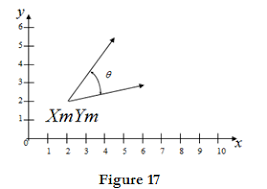

- 2D rotation section aims at enabling the transformation matrix for rotating any object by some angle Ө.
- Rotation of a geometric model about an arbitrary axis, other than any of the coordinate axes, involves several rotational and translation transformations.
- When we rotate an object about the origin (in 2-D), we in fact rotate it about the z-axis.
- Every point on the object rotates along a circular path, with the center of rotation at the origin.
- If we wish to rotate an object about an arbitrary axis, which is perpendicular to the xy-plane, we will have to first translate the axis to the origin and then rotate the model, and finally, translate so that the axis of rotation is restored to its initial position.
- If we erroneously use the equation (2.9) directly, to rotate the object about a fixed axis, and skip the translation of this point to the origin, we will in fact end up rotating the object about the z-axis, and not about the fixed axis.
-
- Thus, the rotation of an object about an arbitrary axis, involves three steps:
- Translate the fixed axis so that it coincides with the z-axis
- Rotate the object about the axis
- Translate the fixed axis back to the original position
Derivation of matrix of 2D object about an arbitrary axis
- Assume that we have to rotate a point P1 with respect to (Xm,Ym) then we have to perform three steps.First we have to translate the (Xm,Ym) to origin.
T1 =
Tx = -Xm and Ty = -Ym
- Then we have to follow second step i.e. rotate it in clockwise or anticlockwise.
Let's assume as anticlockwise rotation by angle Θ.So our rotation matrix will be
R = | cosΘ | sinΘ | 0 |
| -sinΘ | cosΘ | 0 |
| 0 | 0 | 1 |
- Now the third step is to translate back to original position.So the translation matrix (T2) will become
T2 =
now let us form a combined matrix
= Translation * Rotation * Translation
= T1 * R * T2
= | 1 0 0 | cosΘ sinΘ 0 | 1 0 0 |
| 0 1 0 | -sinΘ cosΘ 0 | 0 1 0 |
| -Xm -Ym 1 | 0 0 1 | Xm Ym 1 |
| cosΘ |
sinΘ |
0 |
| -sinΘ |
cosΘ |
0 |
| -Xm*cosΘ+Ym*sinΘ+Xm |
-Xm*sinΘ-YmcosΘ+Ym |
1 |
This transformation matrix is the overall transformation matrix for rotation about an arbitrary point(Xm,Ym)